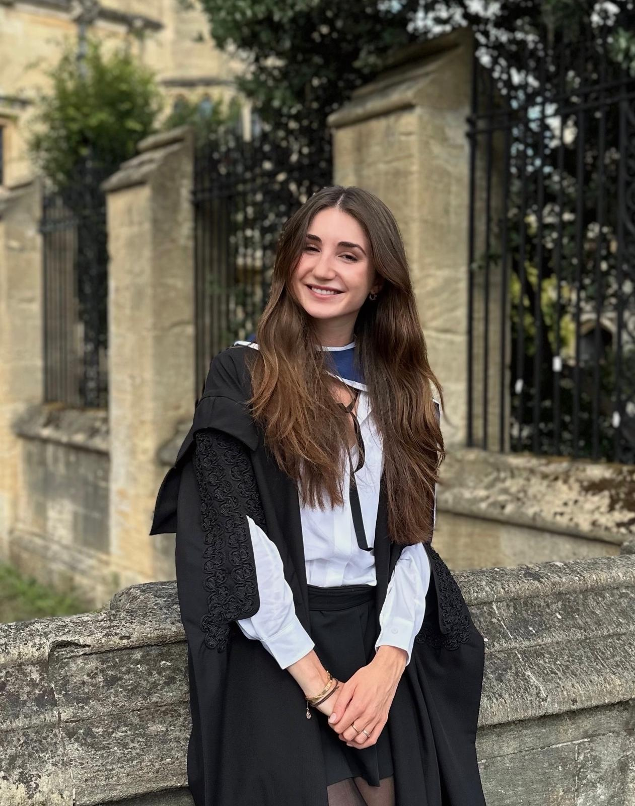
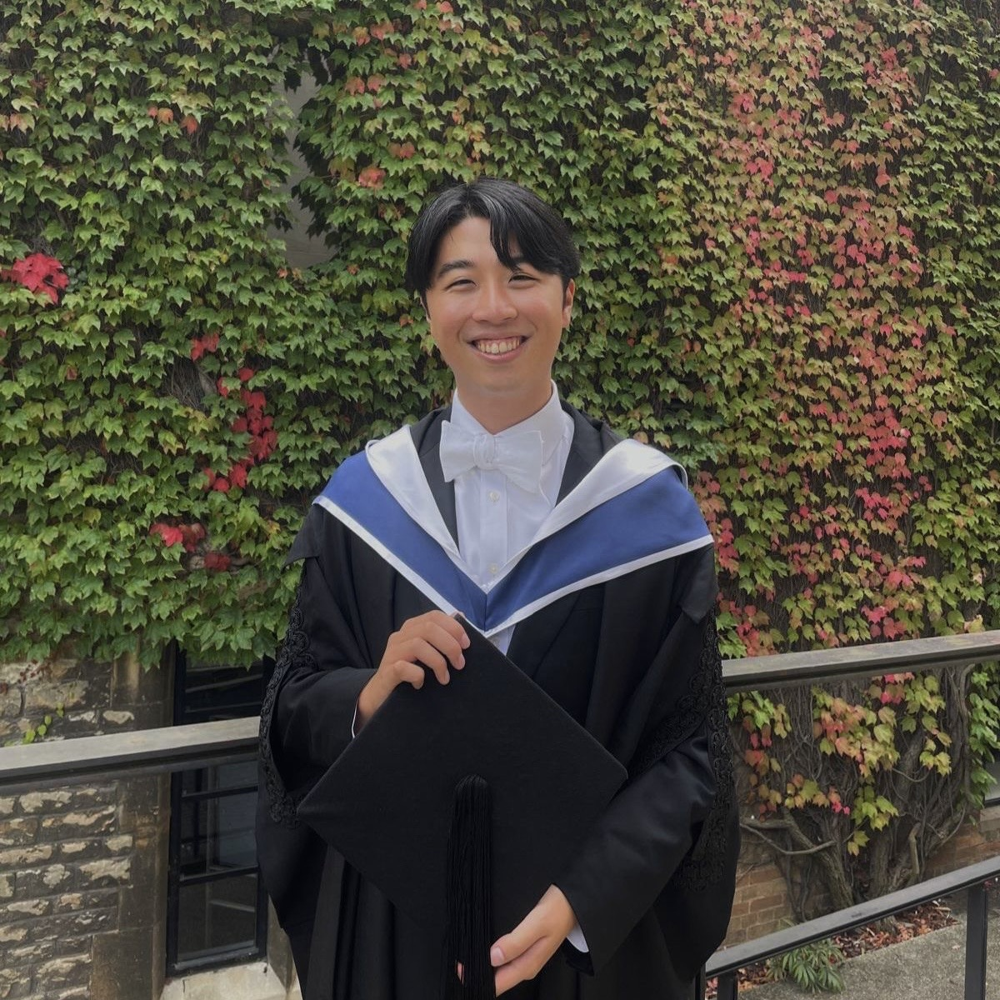

Meet the founders

Natalia is the co-founder and co-director of Telos Pathways and a PhD candidate in History at Oxford. Her research examines Cold War revolutionary networks between the Middle East, Latin America, and Southern Africa. Natalia obtained a Distinction in Oxford’s MPhil in Modern Middle Eastern Studies in 2025 and achieved First Class Honours in her undergraduate studies in International History at the LSE in 2022. She has extensive experience supporting students through GCSE, A Level, and IB exam preparation across various humanities subjects.

Ju Young is the co-founder and co-director of Telos Pathways. He graduated with Distinction from the Oxford MPhil in Modern Middle Eastern Studies in 2024 and previously completed his BA in History and Politics at Oxford in 2020. He has declined his PhD offer from Oxford to continue his work in educational consulting. Ju Young has coached over 150 students over the years in a variety of subjects, many of whom have been admitted to Oxbridge or top US American universities.
Maurice is a PhD candidate in Politics at University College, Oxford. His research focuses on political economy of the United States. He achieved First Class Honours in BSc in Philosophy, Politics and Economics (PPE) at the London School of Economics and a Distinction in the MPhil in European Politics at Oxford.
Maurice has served as a Visiting Research Fellow at the Library of Congress. He teaches US Politics, Comparative Political Economy and Comparative Government to undergraduate students at Oxford. He has extensive experience supporting students with essay writing, exam preparation, and university admissions.
Ashkan is a PhD candidate in Asian and Middle Eastern Studies at New College, Oxford. His research examines how Iranian revolutionary groups built and were reshaped by their global militant networks. He holds a BA with Honours from the University of Chicago in Political Science and Near Eastern Languages and Civilisations and an MPhil with Distinction from Oxford in Modern Middle Eastern Studies.
Jackie is an Oxford Rhodes scholar and PhD candidate in Art History at Christ Church College, Oxford. Her research explores the relationship between art and empire, with a particular focus on Britain and Italy from 1700-1850. She achieved a Distinction in her Masters's at Oxford in History of Art and Visual Culture, and previously graduated cum laude from Yale University's Bachelor in Classical Civilisations and History.
Alex is a PhD candidate in Chemistry at Corpus Christi College, Oxford. In his research, Alex develops computational tools to analyse how biological molecules break apart under laser power. He graduated with First Class Honours from his Bachelor's in Chemistry at King's College London and holds a Master's from Oxford in Theoretical and Computational Chemistry.
Suhaas is an Oxford Rhodes Scholar and a PhD candidate in Physics at Worcester College, Oxford. His research uses machine learning to better understand natural phenomena, particularly in biophysics. Before coming to Oxford, he graduated from Harvard College with high honours in Physics and Social Science. He has taught Master's students in Computer Science at Worcester College, Oxford. Suhaas has pursued a variety of research activities in his field, including publishing eight peer-reviewed papers, working as a machine learning researcher at a range of organisations, and developing machine learning models for designing novel drugs.
Lisa is a PhD candidate at the Oxford Internet Institute at St Antony's College, where she researches the relationship between Artificial Intelligence and national security. She achieved a Distinction in her Oxford MPhil in International Relations and First Class Honours in her BA in English Literature from Cambridge. Alongside her PhD, Lisa works as a Writer and Producer at Amanpour, CNN's flagship global affairs programme, and is currently leading a defence project with the UK Ministry of Defence and King's Department of War Studies.
Duarte is a PhD candidate in Politics at Corpus Christi College, Oxford. He researches European political parties and the history of democratisation. Duarte achieved First Class Honours in his undergraduate degree in Philosophy, Politics and Economics (PPE) at Oxford, and graduated summa cum laude from his Master's degree in Political Science at Sciences Po in Paris. He teaches European Politics to Oxford undergraduate students.
Richard is a PhD candidate in Politics at Mansfield College, Oxford, where his research focuses on democracy and media systems. He achieved First Class Honours in Philosophy, Politics and Economics at the University of York, before completing an MA in Political Science at the University of British Columbia with an equivalent 4.0 GPA.
Richard teaches Introduction to the Theory of Politics, Theory of Politics, and Marx and Marxism to undergraduate students at Oxford. He also delivers seminars on Political Philosophy for the Master of Public Policy programme at the Blavatnik School of Government. He has extensive experience supporting students with essay writing and exam preparation.
Veronika completed a BA in Ethics, Politics & Economics at Yale, followed by an MSc in Global Health Science & Epidemiology at the University of Oxford. Her academic work sits at the intersection of women’s health and genetics. For her MSc dissertation, she investigated the shared genetic architecture between iron metabolism and endometriosis. Veronika is currently working as a research assistant in genetic epidemiology at the University of Leicester.
Ned is a graduate of the Oxford MPhil in Modern Middle Eastern Studies at Wadham College. Prior to Oxford, he graduated with First Class Honours in English Literature from King's College London and studied Creative Writing at the University of East Anglia. He has been tutoring students in English Literature, History, Theatre Studies, and Creative Writing for three years and has specialised in academic writing, personal statements, and extended research projects. Outside of tutoring, Ned works as a freelance journalist and script reader and continues to study Arabic.
Valentino completed his PhD in Classical Languages and Literature at Balliol College, Oxford. His thesis focused on the interaction and intersection of social hierarchies of gender, class and ethnicity in Greek tragedy. He achieved a Distinction in his Master's at Oxford in Classical Languages and Literature, and previously graduated with First Class Honours from UCL in Classics.